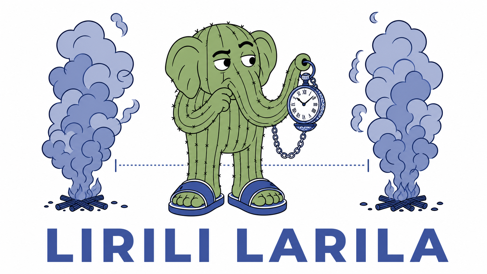

Stage 3: reconciliation

Until now one report meant one incident. From stage 3 onwards, expect duplicates, delayed calls, false alarms, red herrings, and incorrect locations, all in the same stream. Something has to decide which calls are real fires, which calls have mistakes, and which calls should be ignored. That something is ordinary code: no model call, no judgement.

The store methods you built on Day 1 stay exactly as they are. Reconciliation sits above them and uses IncidentStore.find(near=..., radius=..., incident_type=...), to match reports to incidents.
What needs to be built
Everything lives in reconcile.py, which ships the vocabulary and the signatures and none of the logic:
MATCH_RADIUSandTIME_WINDOW, bothNoneat the top of the module. A report within that many world units and that many ticks of an incident may be the same event. Picking the two numbers is most of the work.reconcile_reports(reports, incidents, report_store, tick)- fold each new report into the incident store per the decision table below, append every report toreport_store, and return oneOutcomeper report for the log.reconcile_vision(observations, incidents, tick, coords_of)- apply truck-vision, which is always accurate and outranks any human claim.- The reconcile hole in
runner._process_tick- replace Stage 1’s one-incident-per-report with a call toreconcile_reports, which should a. resolve each observation’s buildings to points, and b. callreconcile_vision. (Add the import if necessary.) - Two more belief fields on
Incident: acontradictionflag and whatever confidence field you designed in the PRD. Stage 1 already grew the rest of both dataclasses -severity,headcount,headcount_qualifier, andbuilding_idonIncident, and the matching extraction fields onReport- the moment the runner started opening incidents from reports. Check theREC-*scenarios.
NOTE: Reconciliation must be pure and testable without an engine. Call building_to_coords before intake, and accept coords is None when a location cannot be resolved at all.
The decision table
reconcile_reports, per report:
| Report type | Match found? | Action |
|---|---|---|
none |
no open incident near | IGNORED - a denial on its own opens nothing |
none |
open incident near | FALSE_ALARM - link the report, keep the incident open |
fire or unknown |
no match | OPEN a new incident, link the report |
fire or unknown |
match | link the report, then merge |
Merging an already-matched report:
- an
unknownincident meeting afirereport -UPDATEthe incident type - a higher severity band than the belief holds -
UPDATE all_outagainstconfirmed_trapped-CONTRADICTION: retain the more cautious belief and flag it- a headcount where none was held yet -
UPDATE, adopt it - anything else -
DUPLICATE
The none row is the one people get wrong. A denial should be treated as weak evidence, not absolute proof that nothing is happening.
reconcile_vision, per observed building:
- seen
normal- close a co-located incident,RESOLVED_VISION - seen
burning- confirm or open one,CONFIRMED_VISION - seen
collapsed- terminal. The building is lost and there is nothing left to dispatch to, so take no reconcile action.
Tuning the two thresholds
Once you pass the REC-* scenario fixtures, then tune MATCH_RADIUS against the live map. The REC-* scenarios all sit inside a 100-unit box, so almost any radius passes them. Londone is a different shape: neighbouring buildings are only tens of world units apart, while the incidents in stage3-partial@londone are hundreds apart. If you set the radius too low, you may send two trucks to a small fire. If you set the radius too high, you may fuse two genuinely separate fires into one belief, send only one truck to two burning buildings, and lose the second.
Bad merges are normal and realistic. Lean on the truck-vision override to self-correct the bad merge.
The belief-strength PRD
Return to the product brief you wrote on Day 1. When reports disagree, what should the dispatcher be able to understand and decide? What uncertainty must remain visible? When may the system continue, and when should it warn or hold?
Do not repeat the full product interview. Revisit only the new decision introduced by this stage, then write a short PRD for the behaviour the operator needs. Cover how a belief opens, how a corroborating report strengthens it, how a false alarm or a denial weakens it without closing it, and how truthful truck vision overrides it. Only then choose the confidence field or rule that supports that behaviour.
Put your belief-strength rule into the reconciliation code. Write scenarios that show what the operator sees after corroboration, denial, contradiction, and truck vision. You must deliver the rule, the code, and the tests.
Activity: Reconcile deterministically
Spoiler: stuck on Stage 3?
-
Write the PRD first. Keep it to one page. Include what the operator sees and may decide, not just how the confidence field changes.
-
Grow the dataclasses. Add the belief fields your PRD needs to
ReportandIncident.IncidentStore.openandupdatealready take**fields. -
Implement both functions as ordinary code. If you find yourself reaching for a model call, the design has gone wrong: identical inputs and identical incident state must produce identical links, run after run.
-
Pass the scenarios.
uv run behave features/reconcile.featurecovers REC-1 to REC-8: open, merge-and-escalate, contradiction, denial-keeps-open, lone denial, vision-closes, vision-opens, and unknown-upgraded-in-place. -
Add fixtures of your own for the cases the eight do not cover - a delayed report, a red herring, and a spatially inconsistent exact location - and preserve conflicting claims rather than silently overwriting them. Worth knowing:
stage3-partial@londonecontains no denial at all, soFALSE_ALARMandIGNOREDare only ever exercised by fixtures. Live play will never tell you those two branches are broken. -
Run it live and tune the thresholds against what you see:
cd ../engine && uv run hadr-engine serve # in its own terminal uv run hadr-runner stage3-partial@londoneBoth functions return their
Outcomelist and the runner throws it away, so bind it and print it while you tune. A run full ofOPENmeans your radius is too small; one incident swallowing the map means it is too large. -
Checkpoint. The reconciliation helper-prompt stub is the intermediate checker for this stage - use it to confirm reconciliation really is in code and not smuggled into a prompt.
When you’re done
- Open a pull request referencing the
REC-*scenario IDs it satisfies, and have a teammate review the thresholds as well as the code. Two numbers with no argument behind them are the most likely thing on this page to be wrong, and the person who did not pick them is the one who will notice. - Post your
MATCH_RADIUSandTIME_WINDOWon the Padlet, with the casualties and buildings lost they produced onstage3-partial@londone. Everyone tuned against the same map: if someone’s radius is an order of magnitude off yours and scores better, that is worth more than any amount of arguing about it in the abstract. - Trade fixtures. Post your single best one from step 5 and take a couple from other people into your own suite. Expect at least one adopted fixture to fail on first run, that is the whole point of the trade.